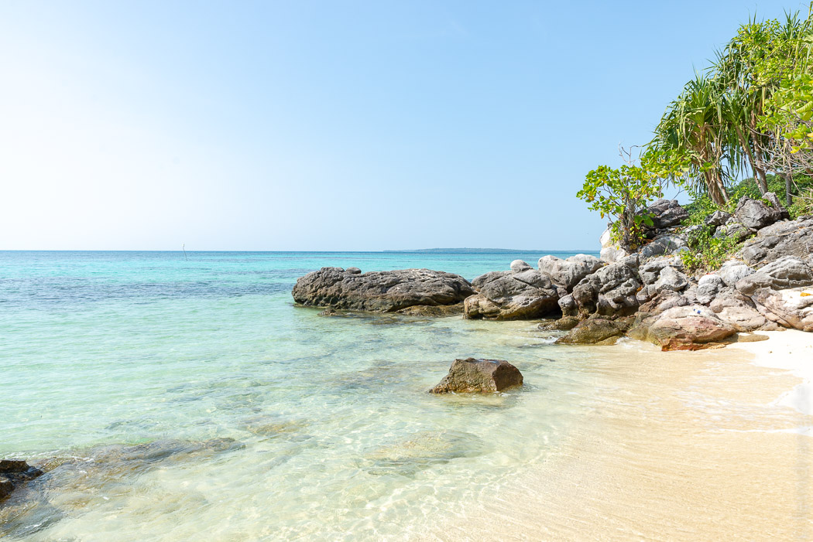

Eine Nacht haben wir sehr unbequem in einem Minibus verbracht, der uns von Jogja zur Nordküste nach Jepara brachte. Der Verkehr ist erstaunlicherweise rund um die Uhr gleich stark, so dass wir um 2 Uhr nachts im Stau standen. Unser Fahrer war aber sehr ambitioniert und hat große Strecken auf der Gegenspur verbracht.
Ab 4 Uhr konnten wir dann in einem Lokal am Hafen herumlungern. Mit einer großen Fähre sind wir vier weitere Stunden übers Meer getuckert. Im unteren Deck hatten noch ein paar Autos zwischen den meterhoch gestapelten Kisten Platz. Darin kommen sämtliche Waren auf die Insel - außer Fisch. Die einheimischen Profis haben die Stühle im Passagierraum gar nicht erst beachtet sondern gleich Decken und Planen ausgebreitet und die Überfahrt schlafend auf dem Boden verbracht. Schlafen war tatsächlich das beste Mittel gegen das arge Schlingern des Boots, aus dessen Fenstern abwechselnd nur Himmel oder nur Meer zu sehen war.
Gegen Mittag hatten wir endlich die Insel Kariumjawa erreicht. Zu unserem Hotel Ayu war es vom Anleger nicht weit. Dort wurden wir sehr nett von den indonesisch-deutschen Besitzern empfangen. Wir haben uns direkt einen Roller geliehen und am nächsten Strand die verlorene Nacht nachgeholt.
Die Insel ist herrlich entspannt. Im kleinen Dorf gibt es ein paar Restaurants und kleine Lädchen für den täglichen Bedarf. Für die Strände muss man sich aber einen Roller ausleihen, denn die liegen recht weit über die grüne Insel verstreut. Das Meer ist traumhaft türkis und die Wellen plätschern meistens nur sanft ans Ufer.
An kleinen Strandbüdchen konnten wir uns mit Wasser und Snacks versorgen, ohne den Schatten der großen Meermandelbäume verlassen zu müssen. So schön es dort war, so wenig lässt sich über die ereignislosen Tage berichten. Man kann einen Tauchausflug organisieren und natürlich schnorcheln. Vor allem aber kann man herrlich ausspannen. Das scheinen auch die freundlichen Einheimischen zu tun, die man selten bei der Arbeit sieht.
Abends verwandelt sich der Dorfplatz in ein Open-Air-Restaurant. Am Straßenrand werden kleine Stände aufgebaut. Dort wählt man aus dem Fang des Tages seinen Fisch, der dann direkt auf den Grill umzieht. Auf dem Rasen dahinter wurden LKW-Planen ausgelegt. Darauf saßen wir an flachen Pastiktischen in dicken Rauchschwaden der Grills und haben uns die köstlichen Tintenfische schmecken lassen.